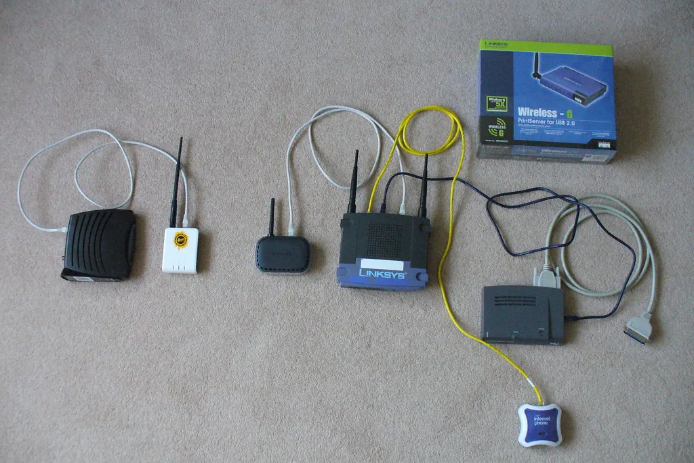

Home Wi-Fi
Almost everything a computer does leans on a steady Wi-Fi connection. Understand the box in the corner and a few calm habits, and most “internet problems” fix themselves.

The Steady Mouse is an independent educational website and is not affiliated with, endorsed by, or sponsored by any company mentioned.
What your Wi-Fi actually is
Your internet arrives at the house through a box from your provider. That box (or a second one beside it) broadcasts a wireless signal called Wi-Fi, which your computer, phone, and printer use to get online without cables. The box is often called a router. Knowing these words takes most of the mystery out of the little troubles.
Reading the lights
Those blinking lights are a status report. They vary by brand, but the ideas are the same:
| Light | Steady green/blue | Off, red, or flashing |
|---|---|---|
| Power | Router is on | Check it is plugged in and switched on |
| Internet / WAN | Connected to your provider | No internet — a restart often fixes it |
| Wi-Fi / Wireless | Wireless is on | Wireless is off or starting up |
The right order to restart things
Restarting your internet equipment fixes a remarkable number of problems, but the order matters. Do it gently and in sequence.
- Unplug the router (and the separate internet box, if you have two) from the wall.
- Wait a full thirty seconds — count it out — so everything clears properly.
- Plug the internet box back in first and wait two minutes for its lights to settle.
- Plug the router back in and wait another two minutes.
- Try the internet again on your computer.
Tip: Give each box its full waiting time. Rushing is the most common reason a restart “doesn't work” — the equipment simply had not finished waking up.
Understanding internet speed
People often blame their Wi-Fi for being “slow” when the picture is a little more nuanced, and understanding it saves both worry and money. Two different things affect how fast the internet feels: the speed your provider sends into the house, and how well the Wi-Fi carries it to the room you are sitting in.
The first is set by your plan with the provider. If pages load slowly on every device, everywhere in the house, even right next to the router, the limit may simply be the plan — a conversation with your provider, using details you already have, can tell you. The second is the Wi-Fi itself: if the internet is quick in one room and sluggish in another, the signal is the issue, and the placement tips below usually help more than paying for a faster plan.
It is also worth knowing that speed is shared. When several people in the house are watching video or making video calls at once, each has a smaller slice, and everything feels slower. This is normal and temporary; it eases as soon as the others finish. None of it means anything is broken, and none of it is your fault — it is simply how a shared connection behaves.
Improving a weak signal
If the Wi-Fi is strong in one room and feeble in another, a few simple changes often help before you spend a penny.
- Place the router out in the open, not inside a cabinet or behind the television.
- Keep it off the floor; a shelf or table spreads the signal better.
- Move it away from thick walls, large metal objects, and the microwave.
- If a far corner of the house is always weak, ask your provider about a “mesh” add-on or an extender — but try placement first.
Finding and changing your Wi-Fi password
Your Wi-Fi name and password are usually printed on a sticker on the router. You rarely need to change them, but it is wise to if you ever shared the password widely.
- Look for the sticker on the back or bottom of the router for the current name and password.
- To change the password, type the router's setup address (also on the sticker, often starting with 192.168) into a browser.
- Sign in with the admin details on the sticker, find the wireless settings, and set a new password.
- Write the new password somewhere safe at home — you will need to reconnect each device once.
What all those connected devices are
It can be unsettling to open a router's settings and see a long list of “devices.” In fact it is reassuring once you know what you are looking at: it is simply everything in your home using the Wi-Fi.
- Your computer, phone, and tablet each appear as a device.
- So does a wireless printer, a smart television, or a video doorbell.
- Names can look cryptic, but most are your own gadgets listed by their maker's code.
If you ever see a device you truly cannot account for, changing your Wi-Fi password (below) removes everything and lets back in only the devices you reconnect yourself.
When the internet is slow or down
Before assuming the worst, a calm checklist sorts out most slowdowns and outages.
- Check whether the trouble is on one device or all of them — if only one, the problem is that device, not the Wi-Fi.
- Look at the router's internet light; if it is off or red, the restart routine above usually revives it.
- Move closer to the router to rule out a weak signal in a far room.
- If every device is down and a restart does not help, the fault may be with your provider — check their official website or app for outages.
Tip: Keep your internet provider's name and account number written down at home. If you ever need to contact them, you will have it to hand — and you will never need to give those details to an unexpected caller.
Keeping your network secure
A few simple habits keep your Wi-Fi yours.
- Use a strong, unique Wi-Fi password rather than the simple default, especially in a flat or close-packed neighborhood.
- Change the router's admin password (the one for its settings page) from the factory default if you can.
- Give visitors the guest network rather than your main password.
Tip: Write your Wi-Fi name and password on a small card and keep it somewhere handy, such as inside a kitchen drawer. When a visitor asks, or when you set up a new device, you will have it to hand without hunting for the sticker on the back of the router.
What a guest network is for
Many routers offer a separate guest network — a second Wi-Fi name with its own password. It lets visitors get online without giving them your main password, and it keeps their devices separate from yours. It is a tidy, safe courtesy for company, and worth switching on in your router's settings.
A simple monthly Wi-Fi routine
Like anything in the home, your internet equipment runs a little sweeter with a touch of regular care — and a gentle monthly habit heads off most of the troubles before they start. None of it is technical; it is housekeeping, no more.
Once a month, give the router a fresh start: unplug it, wait thirty seconds, and plug it back in, following the order described above if you have a separate internet box. This clears out the small confusions that build up over weeks and is the single most effective thing you can do. While you are there, give the router a quick wipe to keep dust off its vents, and check that it is still sitting out in the open rather than behind a stack of post that has crept up around it.
It is also a good moment to think for a second about who has your Wi-Fi password. If a tradesperson or a houseful of visitors has had it since last month, and you would rather they did not keep it, this is the time to switch guests over to the guest network or change the password. A few minutes of this each month keeps the whole house connected and spares you the afternoon when nothing will load. Like oiling a hinge before it squeaks, it is the small, quiet maintenance that you never notice precisely because it is working. With a steady connection in hand, the next everyday skill is handling email calmly: see Email Without Stress.